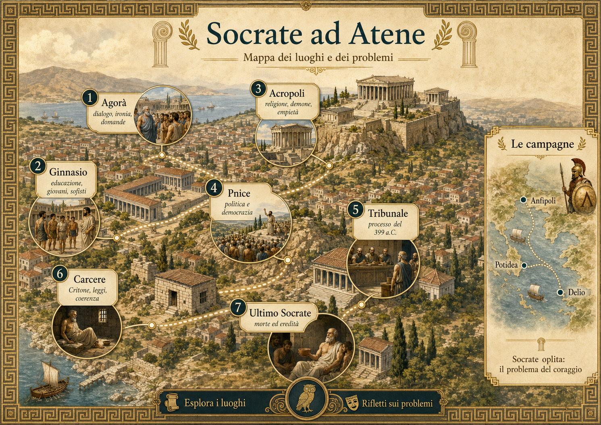

Meleto, sostenuto da Anito e Licone
Socrate è accusato di non riconoscere gli dèi riconosciuti dalla città, di introdurre nuove realtà divine e di corrompere i giovani.
Dato relativamente sicuro
Percorso 05 · Mappa interattiva
Tocca i luoghi. Atene non è lo sfondo della vita di Socrate: è l’interlocutrice che egli interroga e che infine lo giudica.

Fuori dalle mura · Socrate oplita
Le campagne sono attestate dalle fonti, ma i dettagli celebrativi appartengono soprattutto ai racconti platonici. La geografia qui impedisce un equivoco: Socrate non fu soltanto il vecchio dell’Agorà.
Simulazione · Tribunale del 399 a.C.
Non puoi giudicare prima di distinguere le accuse documentate dalle spiegazioni moderne.
Socrate è accusato di non riconoscere gli dèi riconosciuti dalla città, di introdurre nuove realtà divine e di corrompere i giovani.
Dato relativamente sicuro
Non si presenta come maestro, collega la propria attività al dio di Delfi e sostiene di migliorare la città esaminandone le pretese di sapere.
Testimonianza filosofico-letteraria
La sconfitta, i Trenta, Crizia e Alcibiade rendono plausibile un risentimento politico; non dimostrano che il processo fosse soltanto una vendetta politica mascherata.
Da Apologia a Critone e soprattutto al Fedone, la forza filosofica del racconto cresce insieme alla difficoltà di separare il fatto storico dalla costruzione letteraria.